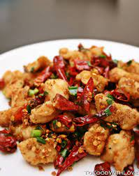
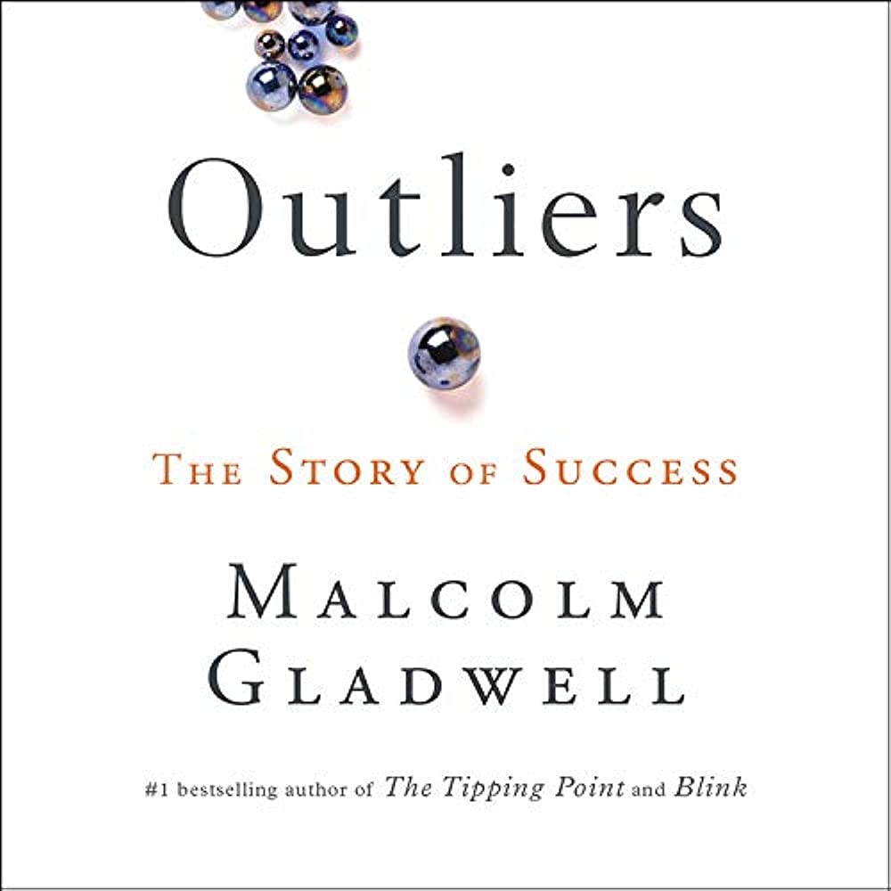

Edward Lai
Hello, my name is Edward Lai. I am excited to share a bit about myself and why I decided to take this class.
I have always been interested about websites and designing interfaces,
and I believe that taking this class will allow me to enhance my skills and expand my knowledge in these areas.
Over the years, I have studied a little bit of web programming on the side.
I have some experience in HTML, CSS, and JavaScript,
which have allowed me to build interactive websites.
I have also dabbled in using languages like Python and C++.
Additionally, I am looking to enhance my skills in this area to build a portfolio website for myself and also
use it for neat purposes next for my clubs that I do at Tufts University. I run the chess club at Tufts so I would
like to make a neat website for information about the club.
I am eager to dive deeper into web programming and software development through this class.
I believe that by participating in this course, I will gain valuable knowledge,
improve my problem-solving abilities, and become a more proficient developer.
Favorite Foods
- Sichuan Red Chilli Chicken
- Pho Dac Biet
- Pork Belly
Favorite Restaurant - Dakzen
Dakzen I love this restaurant because of
its cozy ambiance and delicious food. The staff is always friendly,
and they have a wide variety of dishes to choose from. It is the only Thai restaurant
near Tufts and it is open until 2 AM on most days which means great for late dining.
Also, the pork belly grapow rice dish is fire.
Favorite Food - Sichuan Chicken

Sichuan Red Chilli chicken is my all-time favorite food.
I enjoy it every time I eat it and I always get it whenever I am at a chinese restaurant.
I use chopsticks and pick up pieces like popcorn but I chew really slowly to savor it.
It has the the perfect combination of spice, salt, and crispiness that makes it so good.
I recommend it 10/10 and I would always get it at Chilli Garden in Medford.
Favorite Books
| Name |
Cover |
Author |
Summary |
| 1984 |
 |
George Orwell |
In this dystopian novel,
Orwell paints a bleak future
where government surveillance is omnipresent,
challenging the concept of individual freedom and
sparking reflections on the power of totalitarianism.
|
| The Outliers |
 |
Malcolm Gladwell |
Malcolm Gladwell explores the factors that contribute to success,
revealing hidden patterns and insights that go beyond mere talent.
It's an interest read that dives into the world of outliers and what sets them apart.
|
| The Lord of the Rings |
 |
J.R.R. Tolkien |
J.R.R. Tolkien's epic fantasy trilogy involving a world of magic,
mythical creatures, and heroic quests. Main character Frodo and his companions goes on
a life-threatening adventure to destroy the all-powerful One Ring and save his people.
|
| Hunger Games |
 |
Suzanne Collins |
A thrilling tale of survival and rebellion
in a dystopian society. Main character Katniss Everdeen volunteers for the Hunger Games,
a brutal televised battle for survival, challenging societal norms and igniting a revolution.
|